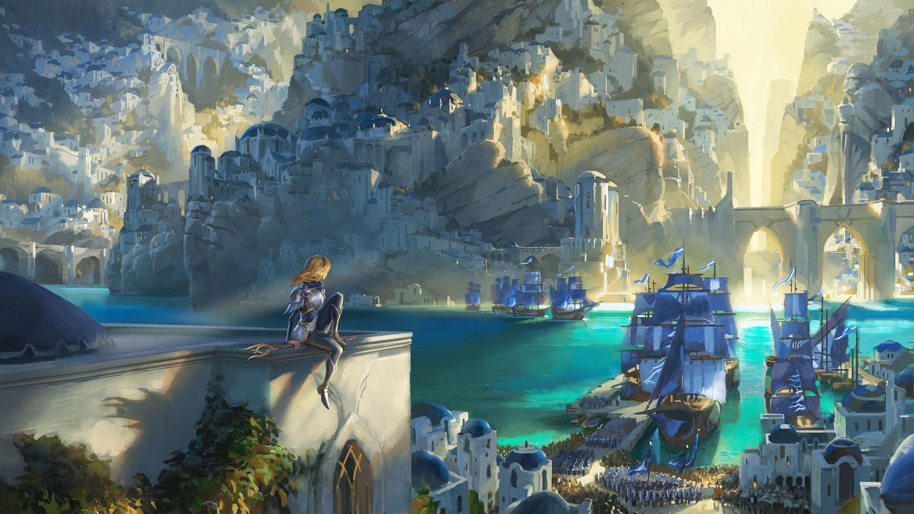
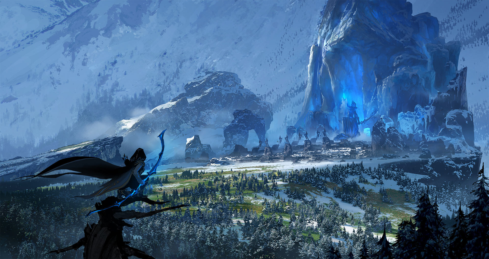
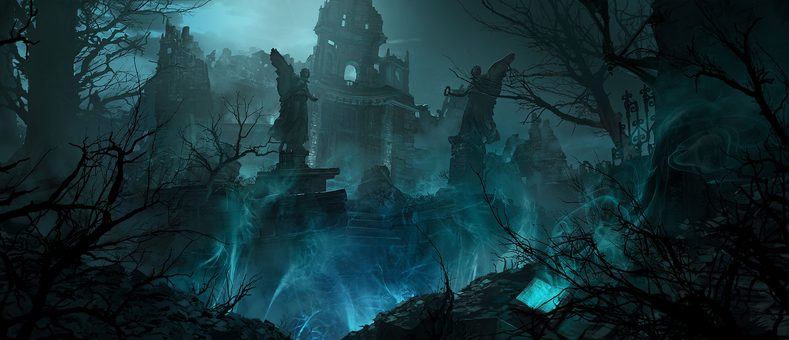

O MUNDO DE LEAGUE OF LEGENDS
DEMACIA
Em um reino imponente e legítimo com uma prestigiosa história militar, os habitantes de Demacia sempre
colocaram os ideais de justiça, honra e dever acima de tudo, orgulhando-se intensamente de sua herança
cultural. No entanto, apesar desses nobres princípios, essa grande nação autossuficiente foi se tornando
cada vez mais fechada e isolacionista nos últimos séculos.
Hoje, Demacia é uma nação em crise.
Sua capital, a Grande Cidade de Demacia, nasceu como um refúgio contra a feitiçaria após as Guerras
Rúnicas, construída sobre a enigmática petricita – uma pedra branca peculiar que anula qualquer energia
mágica. É de lá que a família real, desde muito tempo atrás, defende as cidades e vilas mais afastadas,
as fazendas, as florestas e as montanhas ricas em recursos minerais.
No entanto, após a morte súbita do rei Jarvan III, as outras famílias nobres ainda não aprovaram a
sucessão de seu único herdeiro ao trono, o jovem príncipe Jarvan.
Aqueles que vivem para além das fronteiras fortemente protegidas são cada vez mais vistos com
desconfiança e, em uma época de tantas incertezas, muitos antigos aliados começaram a procurar proteção
em outros lugares. Dizem por aí que a era dourada de Demacia já passou e, a menos que seu povo esteja
disposto a se adaptar a um mundo em constante mudança – o que muitos julgam impossível –, a queda do
reino será inevitável.
Nem toda a petricita da região será capaz de proteger Demacia de si mesma.

FRELJORD
Freljord é uma terra hostil e impiedosa, onde todos já nascem guerreiros para não perecer diante das
adversidades.
Orgulhosas e muito independentes, as tribos locais são, muitas vezes, consideradas selvagens, rústicas e
"nada civilizadas" por seus vizinhos de Valoran, que não conhecem as tradições milenares que as moldam.
Há muitos milhares de anos, a aliança formada pelas irmãs Avarosa, Serylda e Lissandra foi rompida em
uma guerra que ameaçou toda a região de Runeterra, lançando as terras nortenhas ao caos de um inverno
quase constante. Agora, os únicos destinados (ou capacitados) a liderar são os mortais realmente
excepcionais, resistentes aos estragos do fogo e do gelo.
Apesar dos esforços dos Praeglacius, mitos e lendas sobre deuses antigos, yetis enigmáticos e
irrequietos andarilhos espirituais ainda persistem. Os saqueadores dos Garra do Inverno avançam mais e
mais a cada ano que passa, causando problemas ao sul de Demacia e às fronteiras de Noxus ao leste. Por
fim, em busca de um futuro mais pacífico, tribos e clãs independentes começaram a oferecer vassalagem a
Ashe, a jovem rainha dos avarosianos.
Mesmo assim, há maus presságios à espreita. A guerra está voltando a Freljord, e ninguém tem esperança
de escapar.

NOXUS
Noxus é um império poderoso com uma reputação temível. É visto como uma ameaça brutal e expansionista
pelos estrangeiros, mas, por trás do exterior bélico, há uma sociedade surpreendentemente inclusiva que
respeita e encoraja os talentos e as aptidões de cada indivíduo.
Os Noxii já foram uma tribo bárbara e violenta, até o momento em que invadiram a cidade antiga que, hoje
em dia, fica no coração de seu domínio. Mesmo sob ameaças vindas de todos os lados, eles avançaram
contra seus inimigos sem temor, expandindo o território ano a ano. A luta pela sobrevivência definiu o
caráter dos noxianos modernos, um povo orgulhoso que valoriza a força acima de tudo — mas que sabe
reconhecer que ela se manifesta de diversas formas.
Qualquer um pode conquistar uma posição de poder e respeito dentro de Noxus se demonstrar a aptidão
necessária, independentemente de classe social, antecedentes ou riquezas. Os indivíduos que sabem usar
magia são muito respeitados, e costumam ser recrutados para que seus talentos especiais sejam
aprimorados e postos a serviço do império.
Entretanto, apesar dos ideais meritocráticos, as antigas famílias nobres ainda detêm grande poder... e
há quem diga que a maior ameaça a Noxus não vem de fora, mas de dentro.

IONIA
Rodeada por águas traiçoeiras, Ionia é composta por várias províncias aliadas dispersas ao longo do
arquipélago gigantesco conhecido por muitos como as Primeiras Terras. Como a cultura ioniana vem sendo
moldada há muito tempo com base na busca pelo equilíbrio em todas as coisas, a fronteira entre os reinos
material e espiritual tende a ser mais flexível por aqui, principalmente nas florestas e montanhas
selvagens.
Embora os encantamentos deste lugar sejam instáveis e suas criaturas sejam mágicas e perigosas, a
maioria dos ionianos conseguiu levar uma vida próspera aqui durante séculos. Os monastérios cheios de
guerreiros, as milícias provinciais e até mesmo o próprio continente foram o suficiente para mantê-los
protegidos.
Mas essa calmaria terminou há doze anos, quando Noxus atacou as Primeiras Terras. As tropas do império,
as quais pareciam não ter fim, invadiram Ionia e só foram derrotadas muitos anos depois, e com grandes
custos.
Agora, uma paz frágil paira sobre Ionia. Reações distintas à guerra acabaram dividindo a região – alguns
grupos, como os monges Shojin e os Kinkou, procuram retornar ao isolamento pacífico e às tradições
antigas. Já outras facções mais radicais, como a Irmandade Navori e a Ordem das Sombras, exigem a
militarização da magia destas terras, a fim de criar uma nação unificada capaz de se vingar de
Noxus.
O destino de Ionia se sustenta sobre um equilíbrio delicado que alguns estão dispostos a desfazer, mas
todos, sem exceção, estão irrequietos, sentindo a energia da mudança sob seus pés.

ILHAS DAS SOMBRAS
Esta terra amaldiçoada já foi lar de uma civilização nobre e evoluída, sendo conhecida entre seus aliados
como as Ilhas das Bênçãos. No entanto, mais de mil anos atrás, um cataclisma mágico sem precedentes
estilhaçou a barreira entre os mundos material e espiritual, fundindo ambos... e aniquilando toda e
qualquer forma de vida em um instante.
Agora, uma Névoa Negra maligna cobre as Ilhas permanentemente, e a própria terra do lugar encontra-se
corrompida por uma magia sombria. Qualquer mortal que se aventure por esses litorais nefastos terá sua
força vital lentamente drenada, o que, por sua vez, atrai os espíritos insaciáveis e atormentados dos
mortos.
Perecer dentro da névoa é estar condenado a assombrar este lugar medonho por toda a eternidade. Para
piorar, o poder das Ilhas das Sombras parece se fortalecer a cada ano, permitindo que os espectros mais
poderosos vagueiem cada vez mais longe por Runeterra.
